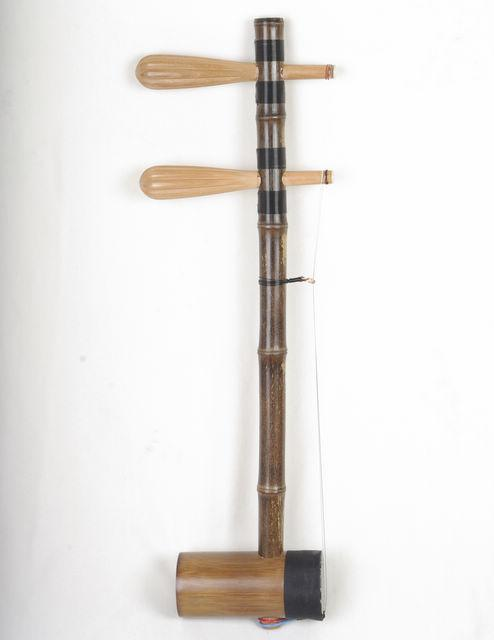
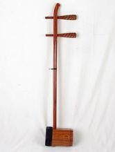
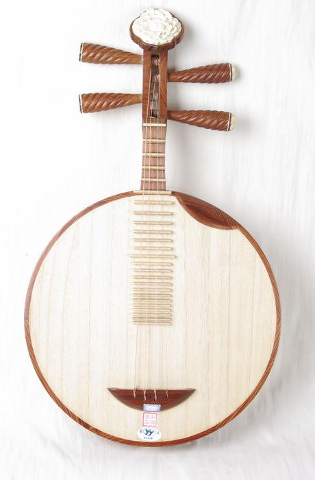
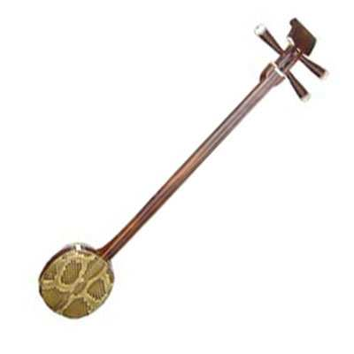
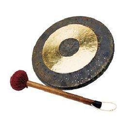
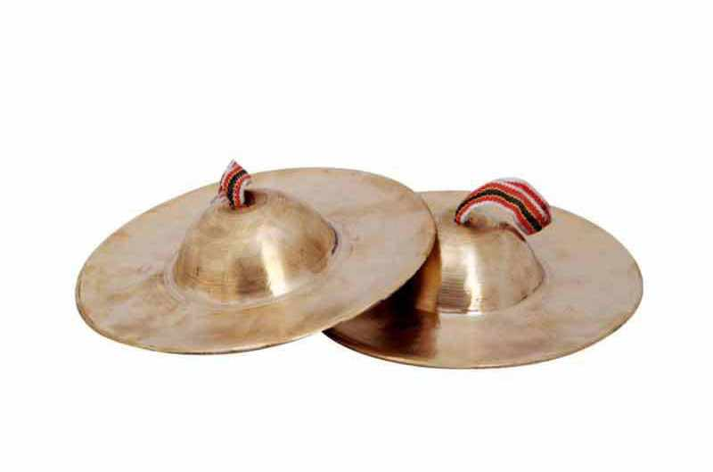
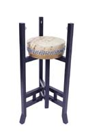

京胡，又称胡琴。是中国的传统拉弦乐器，18世纪时末期，随着中国传统戏曲京剧的形成，在拉弦乐器胡琴的基础上改制而成，至今已有200多年的历史，是中国传统戏曲京剧的主要伴奏乐器。

京二胡，拉弦乐器。京二胡是中国的传统拉弦乐器，18世纪末，随着中国传统戏曲京剧的形成，在拉弦乐器胡琴的基础上改制而成，至今已有200多年的历史，是中国传统戏曲京剧的主要伴奏乐器。京二胡和民乐的二胡区别在于：琴筒比较小，音色和民乐二胡颇有差异，演奏技术和手法比较接近京剧胡琴（京胡），而和民乐二胡有所区别。

月琴，中国传统弹拨乐器，起源于汉代。音箱呈满圆形，琴脖短小。全长62、音箱直径36.3厘米。琴颈和音箱边框用红木、紫檀木制，边框用六块规格一致的木板胶接而成。面板和背板桐木制。箱内置两道音梁，支两个音柱。四轴，四弦，每两弦同音，五度定弦。琴颈和面板上设八或九个品位。

小三弦是中国古老的弹拨乐器之一，历史悠久，文化渊源 悠长。由 于各民 族文化生活习俗和地域 环境的差 异，近千年来，无论从用材和 外观的制 作，还是在音色的演化和演奏 技巧的发 展，小三弦在许多 方面 都发生了 历史 性的变 化，形成了门类众多、各有所长、 各具特 点的局面。

大锣属锣的一种，因面较大 故称大锣。它是铜制的，直径约30厘米，扁平圆体，有边，边孔较小，系以绳。演奏时，左手提锣，右手持木槌击奏，在戏曲伴奏和器乐合奏中常用到它。

钹，古称铜钹、铜盘，民间称镲。打击乐器。碰奏体鸣乐器的一种。中国、外国乐队中都使用。中国古代把铜钹、铜铙或铜盘、镲等，统称为铙钹。

单皮鼓又称小鼓。是打击乐和管弦乐的指挥乐器，演奏时用两根细竹(通称鼓箭子、鼓签)。指挥方法用底鼓，有时并配合手势，各种乐器都随着它的指挥来演奏。歌唱时辅助板打节奏。司鼓、板者称为鼓佬(即鼓师)。